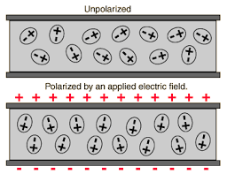

A dielectric is an insulating material that, when placed between the plates of a capacitor, increases its capacitance. Understanding dielectrics is essential for designing capacitors and understanding how they work in various applications.
What is a Dielectric?
A dielectric is a non-conducting material (insulator) that can be polarized by an electric field. When placed between capacitor plates, it increases the capacitance by reducing the electric field strength and allowing more charge to be stored.
Key Properties of Dielectrics
Insulating: Do not conduct electric current
Polarizable: Can be polarized by an electric field
Dielectric constant: Measure of how much the material increases capacitance
Dielectric Constant (κ)
Dielectric Constant Formula
$$\kappa = \frac{C}{C_0}$$
Where:
κ = Dielectric constant (dimensionless)
C = Capacitance with dielectric
C₀ = Capacitance without dielectric (vacuum)
The dielectric constant (also called relative permittivity) is always greater than 1 for real materials. It tells us how much the capacitance increases when a dielectric is inserted.
Common Dielectric Constants
Material
Dielectric Constant (κ)
Common Uses
Vacuum
1.0
Reference standard
Air
1.0006
Air capacitors
Paper
2.0-3.5
Paper capacitors
Mica
3.0-7.0
High-voltage capacitors
Glass
4.0-10.0
High-voltage applications
Porcelain
5.0-7.0
Power capacitors
Aluminum Oxide
8.0-10.0
Electrolytic capacitors
Ceramic (low-k)
6.0-15.0
General purpose
Ceramic (high-k)
100-10,000
Miniature capacitors
Water
80.4
Not used in capacitors
How Dielectrics Work
Polarization Process
When a dielectric is placed in an electric field, several things happen:
Polarization Steps:
Electric field applied: External field creates force on charges
Charge separation: Positive and negative charges separate slightly
Dipole formation: Creates many small electric dipoles
Internal field: Dipoles create internal field opposite to external field
Net field reduction: Total field inside dielectric is reduced

When an electric field is applied to a dielectric, the molecules become polarized, creating an internal field that opposes the external field.
Effect on Capacitance
The presence of a dielectric increases capacitance in two ways:
Reduced electric field: The dielectric reduces the electric field strength
Increased charge storage: More charge can be stored for the same voltage
Capacitance with Dielectric
$$C = \kappa C_0$$
Where:
C = Capacitance with dielectric
κ = Dielectric constant
C₀ = Capacitance without dielectric
Types of Dielectric Polarization
Electronic Polarization
Mechanism: Electron clouds shift relative to nuclei
Speed: Very fast (10⁻¹⁵ seconds)
Materials: All materials
Frequency response: Works at all frequencies
Ionic Polarization
Mechanism: Positive and negative ions move in opposite directions
Speed: Fast (10⁻¹³ seconds)
Materials: Ionic crystals (NaCl, etc.)
Frequency response: Works up to infrared frequencies
Oriental Polarization
Mechanism: Permanent dipoles align with electric field
Speed: Slower (10⁻¹⁰ seconds)
Materials: Polar molecules (water, etc.)
Frequency response: Works up to microwave frequencies
Worked Examples
Example 1: Capacitance with Dielectric
Problem: A parallel plate capacitor has a capacitance of 10 pF in air. If a dielectric with κ = 4.0 is inserted, what is the new capacitance?
Solution Steps:
Given: C₀ = 10 pF, κ = 4.0
Formula: C = κC₀
Substitute: C = 4.0 × 10 pF
Calculate: C = 40 pF
Answer: The capacitance increases to 40 pF.
Example 2: Finding Dielectric Constant
Problem: A capacitor has a capacitance of 5 μF in vacuum and 25 μF with a dielectric. What is the dielectric constant?
Solution Steps:
Given: C₀ = 5 μF, C = 25 μF
Formula: κ = C/C₀
Substitute: κ = 25/5
Calculate: κ = 5.0
Answer: The dielectric constant is 5.0.
Example 3: Energy Storage with Dielectric
Problem: A 2 μF capacitor is charged to 12 V in air, then a dielectric with κ = 3.0 is inserted while maintaining the charge. What is the new voltage and energy?